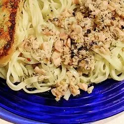

Linguine with Clam Sauce

Description
This linguine with clam sauce is an easy, inexpensive meal. Try the clam sauce over any pasta; lemon-pepper linguine is especially tasty. You can stretch the sauce for larger portions by adding half a cup of chicken broth.
Ingrediens
- 1 (16-ounce) package linguini pasta
- 2 (6.5-ounce) cans minced clams, with juice
- ½ cup vegetable oil
- ¼ cup butter
- 1 tablespoon dried parsley
- ¼ tablespoon dried basil
- ½ teaspoon minced garlic
- ¼ teaspoon ground black pepper, or to taste
Steps
- Gather all ingredients.
- Bring a large pot of lightly salted water to a boil. Cook linguine at a boil until tender yet firm to the bite, about 11 minutes. Drain.
- While the pasta is cooking, combine clams and their juice with oil, butter, parsley, basil, garlic, and pepper in a large saucepan.
- Cook over medium heat until boiling.
- Serve warm clam sauce over pasta.
Home